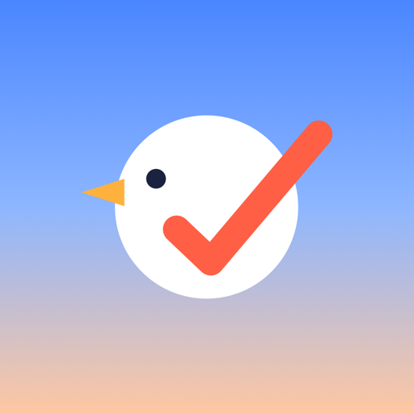
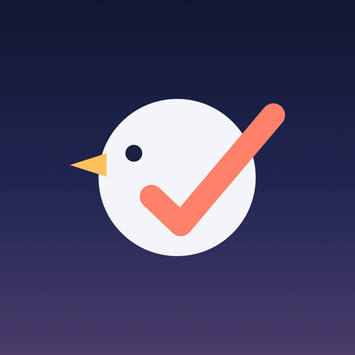
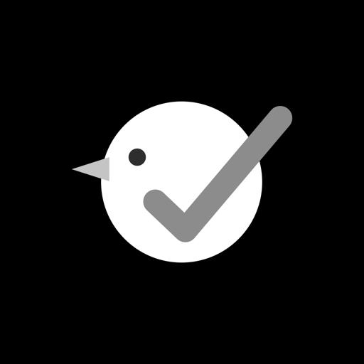
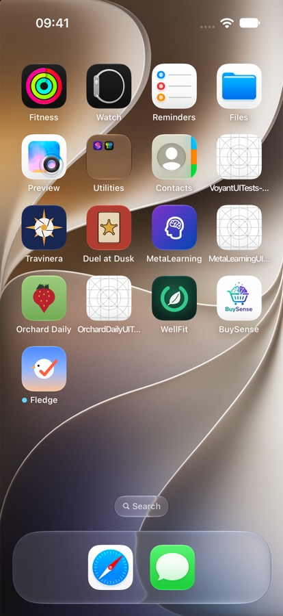

<title>Fledge Brand Book</title>
<link rel="preconnect" href="https://fonts.googleapis.com">
<link rel="stylesheet" href="https://fonts.googleapis.com/css2?family=Nunito:wght@600;700;800;900&family=Inter:wght@400;500;600&display=swap">
<style>
/* Layout: a single column brand book; the hero sits on the dawn sky, sections alternate plain paper and framed specimens. */
:root {
  --paper: #F7F5F2; --card: #FFFFFF; --ink: #1B2240; --ink2: #5B6280; --hair: #E6E2DC;
  --sky: #4A86FF; --skyMid: #8DB6FF; --horizon: #FFC7A1; --dawn: #FF5F45; --gold: #FFB13D; --goldUI: #D0830E; --skyText: #2563D6;
  --heroTop: #4A86FF; --heroMid: #8DB6FF; --heroBot: #FFC7A1; --birdOn: #DCE6FA; --heroInk: #1B2240; --wrong: #B4471F; --shadow: 0 1px 2px rgba(27,34,64,.05), 0 8px 24px rgba(27,34,64,.07);
  --display: ui-rounded, "SF Pro Rounded", "Nunito", system-ui, sans-serif;
  --body: -apple-system, "SF Pro Text", "Inter", system-ui, sans-serif;
}
@media (prefers-color-scheme: dark) { :root:not([data-theme="light"]) {
  --paper: #0E1120; --card: #191D33; --ink: #E9ECF8; --ink2: #A3A9C2; --hair: #2A2F4A; --skyText: #8DB6FF; --goldUI: #FFC15E;
  --heroTop: #121731; --heroMid: #1F2550; --heroBot: #4A3B6B; --birdOn: #F4F5FB; --heroInk: #F4F5FB; --wrong: #FF9C7A; --shadow: 0 0 0 1px #2A2F4A; color-scheme: dark } }
:root[data-theme="dark"] {
  --paper: #0E1120; --card: #191D33; --ink: #E9ECF8; --ink2: #A3A9C2; --hair: #2A2F4A; --skyText: #8DB6FF; --goldUI: #FFC15E;
  --heroTop: #121731; --heroMid: #1F2550; --heroBot: #4A3B6B; --birdOn: #F4F5FB; --heroInk: #F4F5FB; --wrong: #FF9C7A; --shadow: 0 0 0 1px #2A2F4A; color-scheme: dark }

* { box-sizing: border-box }
body { margin: 0; background: var(--paper); color: var(--ink); font: 16px/1.6 var(--body) }
.wrap { max-width: 880px; margin: 0 auto; padding-inline: 20px }
h1, h2, h3 { font-family: var(--display); line-height: 1.1; text-wrap: balance; margin: 0 }
h2 { font-size: clamp(1.6rem, 4vw, 2.2rem); font-weight: 900; letter-spacing: -.01em }
h3 { font-size: 1.1rem; font-weight: 800 }
p { margin: .5rem 0; max-width: 64ch }
.eyebrow { font: 600 .74rem/1 var(--body); letter-spacing: .14em; text-transform: uppercase; color: var(--ink2) }
.muted { color: var(--ink2) }
code { font: .86em ui-monospace, SFMono-Regular, Menlo, monospace; background: var(--hair); padding: .1em .35em; border-radius: 5px }
section { padding-block: 56px 8px; display: grid; gap: 16px }
.card { background: var(--card); border-radius: 22px; box-shadow: var(--shadow); padding: 22px }

/* hero */
.hero { background: linear-gradient(180deg, var(--heroTop) 0%, var(--heroMid) 55%, var(--heroBot) 100%); color: var(--heroInk); padding-block: 64px 56px }
.hero .wrap { display: grid; grid-template-columns: auto 1fr; gap: 36px; align-items: center }
.hero img { width: clamp(140px, 26vw, 220px); border-radius: 22.4%; box-shadow: 0 18px 50px rgba(27,34,64,.28) }
.hero h1 { font-size: clamp(2.6rem, 8vw, 4.6rem); font-weight: 900; letter-spacing: -.02em }
.hero .concept { font: 800 clamp(1.1rem, 2.6vw, 1.5rem) var(--display); margin-top: 6px }
.hero p { font-size: 1.05rem; margin-top: 14px; color: var(--heroInk); opacity: .85 }
@media (max-width: 620px) { .hero .wrap { grid-template-columns: 1fr } }

.idea { display: grid; grid-template-columns: repeat(3, 1fr); gap: 14px }
.idea .card { display: grid; justify-items: center; gap: 10px; text-align: center; padding: 22px 14px }
.idea svg { width: 120px; height: 100px }
.idea b { font: 800 1.05rem var(--display) }
.idea span { font-size: .86rem; color: var(--ink2) }
@media (max-width: 620px) { .idea { grid-template-columns: 1fr } }

.pillars { display: grid; grid-template-columns: repeat(auto-fit, minmax(150px, 1fr)); gap: 12px }
.pillars div { background: var(--card); border-radius: 18px; padding: 16px; box-shadow: var(--shadow) }
.pillars b { font: 900 1.2rem var(--display); display: block }
.pillars span { font-size: .86rem; color: var(--ink2) }

.tbl { overflow-x: auto }
table { border-collapse: collapse; width: 100%; font-size: .93rem; min-width: 480px }
th, td { text-align: left; padding: 9px 12px 9px 0; border-bottom: 1px solid var(--hair); vertical-align: top }
th { font: 600 .72rem var(--body); letter-spacing: .08em; text-transform: uppercase; color: var(--ink2) }

.construct { display: grid; grid-template-columns: minmax(0, 1.2fr) minmax(0, 1fr); gap: 22px; align-items: center }
.construct svg { width: 100%; height: auto; display: block }
.construct ul { margin: 0; padding-left: 18px; display: grid; gap: 7px; font-size: .93rem }
@media (max-width: 680px) { .construct { grid-template-columns: 1fr } }
.lbl { font: 600 15px var(--body); fill: var(--ink2) }
.guide { fill: none; stroke: var(--ink2); stroke-width: 2; stroke-dasharray: 6 8 }

.donts { display: grid; grid-template-columns: repeat(auto-fit, minmax(140px, 1fr)); gap: 12px }
.donts figure { margin: 0; background: var(--card); border-radius: 16px; padding: 14px; box-shadow: var(--shadow); display: grid; gap: 8px; justify-items: center; text-align: center }
.donts svg { width: 96px; height: 76px }
.donts figcaption { font-size: .8rem; color: var(--ink2) }
.donts .x { color: var(--wrong); font-weight: 700 }

.icons { display: grid; grid-template-columns: repeat(3, 1fr); gap: 18px }
.icons figure { margin: 0; display: grid; gap: 10px; justify-items: center; text-align: center }
.icons img { width: 100%; max-width: 200px; border-radius: 22.4%; box-shadow: var(--shadow) }
.icons figcaption b { display: block; font: 800 1rem var(--display) }
.icons figcaption span { font-size: .82rem; color: var(--ink2) }
.sizes { display: flex; align-items: flex-end; gap: 16px; flex-wrap: wrap }
.sizes figure { margin: 0; display: grid; justify-items: center; gap: 6px; font-size: .75rem; color: var(--ink2) }
.sizes img { border-radius: 22.4%; display: block }
.home { display: grid; grid-template-columns: 240px 1fr; gap: 24px; align-items: center }
.home img { width: 240px; border-radius: 30px; border: 1px solid var(--hair) }
@media (max-width: 620px) { .icons { grid-template-columns: 1fr 1fr } .home { grid-template-columns: 1fr } .home img { width: 100%; max-width: 280px } }

.lockups { display: grid; grid-template-columns: 1.4fr 1fr; gap: 14px }
.lockups .card { display: grid; place-items: center; min-height: 170px }
.lockups .ink { background: #1B2240 }
.wm { display: flex; align-items: center; gap: 16px; font: 900 clamp(2.4rem, 6vw, 3.4rem)/1 var(--display); letter-spacing: -.01em }
.wm svg { width: 1.6em; height: 1.6em; flex: none }
@media (max-width: 620px) { .lockups { grid-template-columns: 1fr } }

.motifs { display: grid; grid-template-columns: repeat(2, 1fr); gap: 14px }
.motifs .card { display: grid; gap: 10px; padding: 18px }
.motifs svg { width: 100%; height: 120px; display: block; border-radius: 14px }
.motifs b { font: 800 1rem var(--display) }
.motifs span { font-size: .86rem; color: var(--ink2) }
@media (max-width: 620px) { .motifs { grid-template-columns: 1fr } }
.poses { display: grid; grid-template-columns: repeat(4, 1fr); gap: 12px }
.poses figure { margin: 0; background: var(--card); border-radius: 16px; padding: 14px 8px; box-shadow: var(--shadow); text-align: center; display: grid; gap: 6px; justify-items: center }
.poses svg { width: 90px; height: 80px }
.poses figcaption { font-size: .82rem; color: var(--ink2) }
.poses figcaption b { display: block; color: var(--ink); font: 800 .95rem var(--display) }
@media (max-width: 620px) { .poses { grid-template-columns: 1fr 1fr } }

.swatches { display: grid; grid-template-columns: repeat(5, 1fr); gap: 10px }
.sw { border-radius: 16px; overflow: hidden; box-shadow: var(--shadow); background: var(--card) }
.sw i { display: block; height: 76px }
.sw div { padding: 9px 11px; font-size: .78rem; color: var(--ink2); line-height: 1.35 }
.sw b { display: block; color: var(--ink); font: 800 .95rem var(--display) }
@media (max-width: 620px) { .swatches { grid-template-columns: 1fr 1fr } }
.type { display: grid; gap: 4px }
.type .d { font: 900 clamp(2rem, 6vw, 3rem)/1.05 var(--display) }
.type .n { font: 800 2.2rem/1 var(--display); font-variant-numeric: tabular-nums }
.voice { display: grid; gap: 10px }
.bubble { background: var(--card); border-radius: 18px; padding: 12px 14px; box-shadow: var(--shadow); display: flex; gap: 12px; align-items: flex-start; max-width: 520px }
.bubble img { width: 38px; border-radius: 9px; flex: none }
.bubble b { font-weight: 600 }
.bubble span { color: var(--ink2); font-size: .92rem }
.files { font-size: .9rem }
.files li { margin-bottom: 5px }
footer { padding-block: 48px 64px; color: var(--ink2); font-size: .85rem }
:focus-visible { outline: 2px solid var(--skyText); outline-offset: 2px }
</style>

<svg width="0" height="0" style="position:absolute" aria-hidden="true">
  <defs>
    <!-- The Fledgling, in render-icon.swift mark space -->
    <symbol id="mark" viewBox="236 236 626 468">
      <circle cx="548" cy="470" r="214" style="fill:var(--body-c, #fff)"/>
      <polygon points="356,404 256,436 356,468" style="fill:var(--beak-c, #FFB13D)"/>
      <circle cx="430" cy="404" r="23" style="fill:var(--eye-c, #1B2240)"/>
      <polyline points="478,522 558,598 810,300" style="fill:none;stroke:var(--wing-c, #FF5F45);stroke-width:64;stroke-linecap:round;stroke-linejoin:round"/>
    </symbol>
    <symbol id="disc" viewBox="0 0 100 100">
      <defs><linearGradient id="dg" x1="0" y1="0" x2="0" y2="1"><stop offset="0" stop-color="#4A86FF"/><stop offset=".5" stop-color="#8DB6FF"/><stop offset="1" stop-color="#FFC7A1"/></linearGradient></defs>
      <circle cx="50" cy="50" r="50" fill="url(#dg)"/>
      <svg x="17" y="22" width="66" height="56"><use href="#mark"/></svg>
    </symbol>
  </defs>
</svg>

<header class="hero">
  <div class="wrap">
    
    <div>
      <div class="eyebrow" style="color:inherit;opacity:.75">Brand concept · v2 · October 2026</div>
      <h1>Fledge</h1>
      <div class="concept">First flight: done becomes flight.</div>
      <p>Habits are fledglings. Fledge looks after three at a time, does the tracking for you, and lets each one go once it can fly on its own. Most habit apps celebrate the grind. Fledge celebrates letting go.</p>
    </div>
  </div>
</header>

<main class="wrap">
  <section>
    <div class="eyebrow">The idea</div>
    <h2>The checkmark is the wing</h2>
    <p class="muted">One shape carries the whole product story. A completed habit gets a check. In Fledge, that check is the bird's wing, and its long stroke breaks out of the body because the wing is already lifting.</p>
    <div class="idea">
      <div class="card">
        <svg viewBox="0 0 120 100" aria-hidden="true"><polyline points="30,52 50,72 92,26" style="fill:none;stroke:var(--dawn);stroke-width:13;stroke-linecap:round;stroke-linejoin:round"/></svg>
        <b>Done</b><span>The universal mark of a finished task</span>
      </div>
      <div class="card">
        <svg viewBox="0 0 120 100" aria-hidden="true"><svg x="8" y="8" width="104" height="80"><use href="#mark" style="--body-c:var(--birdOn)"/></svg></svg>
        <b>Becomes a wing</b><span>Placed on the fledgling, the check reads as a wing</span>
      </div>
      <div class="card">
        <svg viewBox="0 0 120 100" aria-hidden="true">
          <path d="M8 92 C 40 86, 70 60, 112 14" style="fill:none;stroke:var(--goldUI);stroke-width:2.5;stroke-dasharray:3 6;stroke-linecap:round"/>
          <g transform="rotate(-12 60 46)"><svg x="14" y="10" width="92" height="70"><use href="#mark" style="--body-c:var(--birdOn)"/></svg></g>
        </svg>
        <b>Then flight</b><span>When the habit sticks, it flies and frees a slot</span>
      </div>
    </div>
  </section>

  <section>
    <div class="eyebrow">Pillars</div>
    <h2>Five things Fledge always is</h2>
    <div class="pillars">
      <div><b>Few</b><span>Three habits, never thirty. The nest motif has exactly three arcs.</span></div>
      <div><b>Effortless</b><span>Apple Health does the logging. Rings fill by themselves.</span></div>
      <div><b>Kind</b><span>Rest is fine. No red, no "streak broken", no guilt.</span></div>
      <div><b>Private</b><span>No account. Health data stays on the iPhone.</span></div>
      <div><b>Native</b><span>Feels like Apple made it: SF Pro Rounded, glass only on navigation.</span></div>
    </div>
  </section>

  <section>
    <div class="eyebrow">Personality</div>
    <h2>A calm friend who is proud when you need them less</h2>
    <div class="tbl"><table>
      <thead><tr><th>Fledge is</th><th>Fledge is not</th><th>Sounds like</th></tr></thead>
      <tbody>
        <tr><td><b>Calm</b></td><td>Sleepy or vague</td><td>"All three done. Nest is quiet."</td></tr>
        <tr><td><b>Warm</b></td><td>Cute or babyish. It is not a pet</td><td>"Read is still in the nest today. 10 minutes is enough."</td></tr>
        <tr><td><b>Confident</b></td><td>Pushy or hype</td><td>"Walk is ready to fly."</td></tr>
        <tr><td><b>Light</b></td><td>Childish</td><td>"Rest day for Meditate."</td></tr>
        <tr><td><b>Proud of you</b></td><td>Proud of itself</td><td>"It stuck. You don't need to watch it anymore."</td></tr>
      </tbody>
    </table></div>
  </section>

  <section>
    <div class="eyebrow">The mark</div>
    <h2>The Fledgling</h2>
    <div class="card construct">
      <svg viewBox="150 180 800 590" role="img" aria-label="Construction of the Fledgling mark with guides">
        <rect x="129" y="149" width="800" height="600" style="fill:none"/>
        <circle cx="548" cy="470" r="214" class="guide"/>
        <circle cx="548" cy="470" r="321" class="guide" style="opacity:.35"/>
        <svg x="236" y="236" width="626" height="468" viewBox="236 236 626 468"><use href="#mark" style="--body-c:var(--birdOn)"/></svg>
        <circle cx="548" cy="470" r="5" style="fill:var(--ink2)"/>
        <line x1="548" y1="470" x2="762" y2="470" style="stroke:var(--ink2);stroke-width:2"/>
        <text x="610" y="460" class="lbl">r</text>
        <line x1="810" y1="300" x2="880" y2="230" style="stroke:var(--ink2);stroke-width:1.5"/>
        <text x="760" y="215" class="lbl">wing tip breaks the outline (0.35 r)</text>
        <line x1="300" y1="436" x2="230" y2="560" style="stroke:var(--ink2);stroke-width:1.5"/>
        <text x="160" y="585" class="lbl">beak 0.47 r</text>
        <text x="420" y="760" class="lbl">wing stroke 0.30 r, round caps</text>
      </svg>
      <ul>
        <li><b>Facing left, on purpose.</b> The checkmark must stay a true checkmark, with the long stroke rising to the right. With the bird facing left, that stroke is a wing raised behind it as it takes off.</li>
        <li><b>Four elements only:</b> white body, coral wing, gold beak, ink eye. No outline, no gradient, no limbs, no expressions.</li>
        <li><b>Clear space:</b> half a body radius on every side (outer dashed circle).</li>
        <li><b>Minimum size:</b> 16 px for the mark, 29 pt for the icon. Both are checked.</li>
        <li><b>Never</b> use SF Symbols' <code>bird</code> or <code>bird.fill</code> in its place. That one is a hummingbird.</li>
      </ul>
    </div>
    <div class="donts">
      <figure><svg viewBox="0 0 96 76" aria-hidden="true"><g transform="translate(96 0) scale(-1 1)"><svg x="8" y="6" width="80" height="64"><use href="#mark" style="--body-c:var(--birdOn)"/></svg></g></svg><figcaption><span class="x">✕ Mirror it.</span> The check stops being a check.</figcaption></figure>
      <figure><svg viewBox="0 0 96 76" aria-hidden="true"><g transform="rotate(25 48 38)"><svg x="8" y="6" width="80" height="64"><use href="#mark" style="--body-c:var(--birdOn)"/></svg></g></svg><figcaption><span class="x">✕ Rotate it.</span> Only the flying pose tilts, by 12°.</figcaption></figure>
      <figure><svg viewBox="0 0 96 76" aria-hidden="true"><svg x="8" y="6" width="80" height="64"><use href="#mark" style="--body-c:var(--birdOn);--wing-c:#2CA874"/></svg></svg><figcaption><span class="x">✕ Recolour the wing.</span> Coral means done.</figcaption></figure>
      <figure><svg viewBox="0 0 96 76" aria-hidden="true"><svg x="8" y="6" width="80" height="64"><use href="#mark" style="--body-c:var(--birdOn)"/></svg><circle cx="30" cy="26" r="5" style="fill:none;stroke:var(--ink);stroke-width:2"/><path d="M28 70 l-4 6 M38 70 l-2 6" style="stroke:var(--ink);stroke-width:2.5;stroke-linecap:round"/></svg><figcaption><span class="x">✕ Make it a mascot.</span> No legs, glasses or faces.</figcaption></figure>
    </div>
  </section>

  <section>
    <div class="eyebrow">App icon</div>
    <h2>Three appearances, one silhouette</h2>
    <div class="icons">
      <figure><figcaption><b>Dawn</b><span>Default. Sky to horizon gradient</span></figcaption></figure>
      <figure><figcaption><b>Night</b><span>Dark mode, and the Pro alternate icon</span></figcaption></figure>
      <figure><figcaption><b>Tinted</b><span>The system tints it by luminance</span></figcaption></figure>
    </div>
    <div class="card">
      <h3 style="margin-bottom:12px">Legible down to Spotlight size</h3>
      <div class="sizes">
        <figure>120</figure>
        <figure>76</figure>
        <figure>60</figure>
        <figure>40</figure>
        <figure>29</figure>
        <figure>60</figure>
        <figure>29</figure>
      </div>
    </div>
    <div class="home">
      
      <div>
        <h3>On a real Home Screen</h3>
        <p class="muted">iPhone 17 simulator, iOS 27. Among busy, glossy icons, the white disc on open sky is the calmest shape on the screen and still the easiest to find. That suits a brand built on "fewer".</p>
        <p class="muted"><b style="color:var(--ink)">Icon Composer:</b> three layers (sky, bird, wing). Liquid Glass with specular on the bird and wing, with the wing on top so it lifts off the body in clear and tinted modes.</p>
      </div>
    </div>
  </section>

  <section>
    <div class="eyebrow">Wordmark and lockup</div>
    <h2>Fledge, set in SF Pro Rounded Bold</h2>
    <div class="lockups">
      <div class="card"><div class="wm" style="color:var(--ink)"><svg aria-hidden="true"><use href="#disc"/></svg>Fledge</div></div>
      <div class="card ink"><div class="wm" style="color:#F4F5FB;font-size:2.4rem"><svg aria-hidden="true"><use href="#disc"/></svg>Fledge</div></div>
    </div>
    <p class="muted">Sentence case only, tracking −1%, in ink or night white. The gap between disc and word is a quarter of the disc. On the web the fallback face is Nunito 900. A rendered PNG lockup for the press kit is <code>Design/Icon/fledge-lockup.png</code>.</p>
  </section>

  <section>
    <div class="eyebrow">Secondary motifs</div>
    <h2>Used in the app and marketing, never in the icon</h2>
    <div class="motifs">
      <div class="card">
        <svg viewBox="0 0 300 120" aria-hidden="true" style="background:var(--paper)">
          <path d="M80 50 Q150 92 220 50" style="fill:none;stroke:var(--ink2);stroke-width:9;stroke-linecap:round"/>
          <path d="M98 70 Q150 100 202 70" style="fill:none;stroke:var(--ink2);stroke-width:9;stroke-linecap:round"/>
          <path d="M118 88 Q150 106 182 88" style="fill:none;stroke:var(--ink2);stroke-width:9;stroke-linecap:round"/>
        </svg>
        <b>Nest: three arcs</b><span>The three habits. Used for empty slots, onboarding, the Flown shelf footer and widget empty states. Tried in the icon, but it became noise at 40 px.</span>
      </div>
      <div class="card">
        <svg viewBox="0 0 300 120" aria-hidden="true" preserveAspectRatio="none">
          <defs>
            <linearGradient id="s1" x1="0" y1="0" x2="0" y2="1"><stop offset="0" stop-color="#FFE2CF"/><stop offset="1" stop-color="#F7F5F2"/></linearGradient>
            <linearGradient id="s2" x1="0" y1="0" x2="0" y2="1"><stop offset="0" stop-color="#DCE9FF"/><stop offset="1" stop-color="#F7F5F2"/></linearGradient>
            <linearGradient id="s3" x1="0" y1="0" x2="0" y2="1"><stop offset="0" stop-color="#E7DBFF"/><stop offset="1" stop-color="#F7F5F2"/></linearGradient>
            <linearGradient id="s4" x1="0" y1="0" x2="0" y2="1"><stop offset="0" stop-color="#1B2240"/><stop offset="1" stop-color="#0E1120"/></linearGradient>
          </defs>
          <rect width="75" height="120" fill="url(#s1)"/><rect x="75" width="75" height="120" fill="url(#s2)"/><rect x="150" width="75" height="120" fill="url(#s3)"/><rect x="225" width="75" height="120" fill="url(#s4)"/>
          <text x="10" y="108" font-size="11" fill="#5B6280">dawn</text><text x="85" y="108" font-size="11" fill="#5B6280">day</text><text x="160" y="108" font-size="11" fill="#5B6280">dusk</text><text x="235" y="108" font-size="11" fill="#A3A9C2">night</text>
        </svg>
        <b>Dawn sky</b><span>A time-of-day gradient behind Today, onboarding, graduation and every App Store screenshot.</span>
      </div>
      <div class="card">
        <svg viewBox="0 0 300 120" aria-hidden="true" style="background:var(--paper)">
          <path d="M20 108 C 110 100, 170 60, 260 16" style="fill:none;stroke:var(--goldUI);stroke-width:3;stroke-dasharray:4 8;stroke-linecap:round"/>
          <g transform="rotate(-12 250 22)"><svg x="226" y="2" width="52" height="40"><use href="#mark" style="--body-c:var(--birdOn)"/></svg></g>
        </svg>
        <b>Flight path</b><span>A dotted gold curve, used only for graduation, the share card and "ready to fly". Gold is reserved for flying.</span>
      </div>
      <div class="card">
        <svg viewBox="0 0 300 120" aria-hidden="true" style="background:var(--paper)">
          <circle cx="150" cy="80" r="26" style="fill:none;stroke:var(--sky);stroke-width:9"/>
          <polyline points="139,80 147,88 162,72" style="fill:none;stroke:var(--sky);stroke-width:6;stroke-linecap:round;stroke-linejoin:round"/>
          <g style="fill:var(--dawn)"><ellipse cx="112" cy="40" rx="4" ry="9" transform="rotate(-30 112 40)"/><ellipse cx="135" cy="24" rx="4" ry="9" transform="rotate(-10 135 24)"/><ellipse cx="165" cy="20" rx="4" ry="9" transform="rotate(12 165 20)"/><ellipse cx="190" cy="36" rx="4" ry="9" transform="rotate(32 190 36)"/></g>
          <g style="fill:var(--goldUI);opacity:.8"><ellipse cx="124" cy="56" rx="3" ry="7" transform="rotate(-20 124 56)"/><ellipse cx="178" cy="54" rx="3" ry="7" transform="rotate(22 178 54)"/></g>
        </svg>
        <b>Feathers</b><span>Six small feathers drift up 40 pt over 0.8 s when a habit is done. It is a reward, never decoration.</span>
      </div>
    </div>
    <h3>Poses for the in-app FledgeBird</h3>
    <div class="poses">
      <figure><svg viewBox="0 0 90 80" aria-hidden="true"><svg x="5" y="8" width="80" height="64"><use href="#mark" style="--body-c:var(--birdOn)"/></svg></svg><figcaption><b>Sitting</b>The mark itself</figcaption></figure>
      <figure><svg viewBox="0 0 90 80" aria-hidden="true"><svg x="5" y="18" width="80" height="64"><use href="#mark" style="--body-c:var(--birdOn)"/></svg><rect x="0" y="52" width="90" height="28" style="fill:var(--card)"/><path d="M14 54 Q45 74 76 54" style="fill:none;stroke:var(--ink2);stroke-width:5;stroke-linecap:round"/><path d="M22 64 Q45 78 68 64" style="fill:none;stroke:var(--ink2);stroke-width:5;stroke-linecap:round"/><path d="M32 73 Q45 80 58 73" style="fill:none;stroke:var(--ink2);stroke-width:5;stroke-linecap:round"/></svg><figcaption><b>Peeking</b>Empty slots</figcaption></figure>
      <figure><svg viewBox="0 0 90 80" aria-hidden="true"><g transform="rotate(-12 45 40)"><svg x="5" y="8" width="80" height="64"><use href="#mark" style="--body-c:var(--birdOn)"/></svg></g></svg><figcaption><b>Flying</b>Graduation, tilted 12°</figcaption></figure>
      <figure><svg viewBox="0 0 90 80" aria-hidden="true"><svg x="5" y="8" width="80" height="64" viewBox="236 236 626 468"><circle cx="548" cy="470" r="214" style="fill:var(--birdOn)"/><polygon points="356,404 256,436 356,468" fill="#FFB13D"/><path d="M405 402 Q430 424 455 402" style="fill:none;stroke:#1B2240;stroke-width:14;stroke-linecap:round"/><polyline points="478,560 560,600 700,520" style="fill:none;stroke:var(--dawn);stroke-width:64;stroke-linecap:round;stroke-linejoin:round"/></svg><text x="68" y="18" style="fill:var(--ink2);font:700 12px var(--body)">z</text></svg><figcaption><b>Sleeping</b>All done, empty Flown</figcaption></figure>
    </div>
  </section>

  <section>
    <div class="eyebrow">Colour and type</div>
    <h2>The icon's colours are the brand's colours</h2>
    <div class="swatches">
      <div class="sw"><i style="background:#4A86FF"></i><div><b>Sky</b>#4A86FF<br>Brand ground, Health</div></div>
      <div class="sw"><i style="background:#FF5F45"></i><div><b>Dawn</b>#FF5F45<br>The wing: done</div></div>
      <div class="sw"><i style="background:#FFB13D"></i><div><b>Gold</b>#FFB13D<br>Flight only</div></div>
      <div class="sw"><i style="background:#1B2240"></i><div><b>Ink</b>#1B2240<br>Text, wordmark, CTA</div></div>
      <div class="sw"><i style="background:#F7F5F2"></i><div><b>Cloud</b>#F7F5F2<br>Screens, paper</div></div>
    </div>
    <p class="muted">UI tokens, dark values, contrast ratios and the eight habit colours stay in <code>docs/DESIGN.md</code> §3.2.</p>
    <div class="card type">
      <div class="eyebrow">SF Pro Rounded Heavy · titles</div>
      <div class="d">Walk is ready to fly.</div>
      <div class="eyebrow" style="margin-top:14px">SF Pro Rounded · numbers</div>
      <div class="n">4,210 <span style="font:500 1rem var(--body);color:var(--ink2)">/ 6,000 steps</span></div>
      <div class="eyebrow" style="margin-top:14px">SF Pro Text · body</div>
      <p style="margin:0">Flown habits keep tracking quietly. We'll nudge you only if one slips.</p>
    </div>
  </section>

  <section>
    <div class="eyebrow">Voice in use</div>
    <h2>How it sounds outside the app</h2>
    <div class="voice">
      <div class="bubble"><div><b>Fledge</b><br><span>Read is still in the nest today. 10 minutes is enough.</span></div></div>
      <div class="bubble"><div><b>Fledge</b><br><span>2 of 3 done. Walk needs 1,800 steps.</span></div></div>
      <div class="bubble"><div><b>Fledge</b><br><span>Walk is ready to fly ✦</span></div></div>
    </div>
    <p class="muted">App Store subtitle: <b style="color:var(--ink)">3 habits that track themselves</b>. Campaign: <b style="color:var(--ink)">This year, fewer habits.</b></p>
  </section>

  <section>
    <div class="eyebrow">Files</div>
    <h2>Where everything lives</h2>
    <ul class="files">
      <li><code>docs/BRAND.md</code>: this concept as text, the source of truth</li>
      <li><code>Design/Icon/render-icon.swift</code>: renders every file below from one geometry; <code>fledge-icon.svg</code> matches it</li>
      <li><code>fledge-icon-1024.png</code>, <code>-dark-</code>, <code>-tinted-</code>: installed in <code>AppIcon</code> and <code>AppIcon-Night</code></li>
      <li><code>layer-background.png</code>, <code>layer-bird.png</code>, <code>layer-wing.png</code>: for Icon Composer (DES-2)</li>
      <li><code>fledge-mark.png</code>, <code>fledge-lockup.png</code>: for the press kit and landing page</li>
      <li><code>icon-preview-dawn.png</code>, <code>icon-preview-night.png</code>: Settings › App icon previews</li>
    </ul>
  </section>
</main>
<footer class="wrap">Fledge brand concept v2 · 14 October 2026</footer>
